Next: Posterior Distribution
Up: Markov Random Field Models
Previous: Maximum Entropy Interpretation
In this section we demonstrate how the MRF
theory developed in Section 2
can be utilized in
practise.
We specifically look at the the problem of estimating the original image
attribute from a noisy image.
We first consider an
image observation model (in a lexicographical ordering)
where 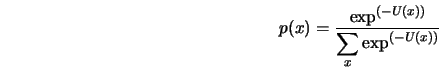 is the observed image of size 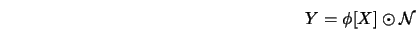, 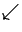 is of
size and is the
image to be estimated along with its attributes; 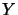, in
general, is a nonlinear operator, 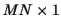 is the corrupting
noise to be further qualified a bit later, and 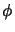 is
an invertible nonlinear operation (for example addition or
multiplication).
We assume that is a MRF and is statistically independent
of . Usually one considers to be a linear operator
and to be an additive operator, resulting in the
observation model
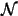
and at pixel level
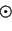
where 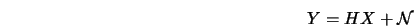 is a circulant matrix corresponding to the
point spread function (PSF) and often referred to as the PSF
matrix, having dimension 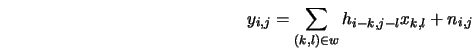. Often is
also referred to as the blurring matrix. Lower case letters
represent appropriate element
of the respective matrix or column vector, and 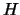 is the
window size over which the PSF operates; typically a 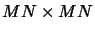 or 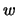 window. For the specific
structure of see [88].
Let 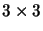 be any early vision attribute of the image
(for example depth, edge, segment, texture, restored
image, etc.), then the problem one is interested in is
Estimate (or a combination of )
given .
We shall employ the maximum a posteriori (MAP)
estimation approach, namely
Estimate such that
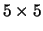
is maximized
Note 2.4
If we are interested in restoring from
then we would compute that 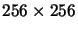 which maximizes 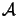.
Next: Posterior Distribution
Up: Markov Random Field Models
Previous: Maximum Entropy Interpretation
2004-02-10